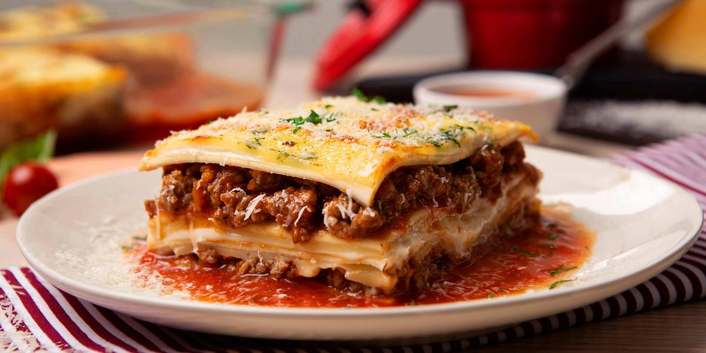

Lasaña
Descripcion:
La lasaña es un tipo de pasta. Se suele servir en láminas superpuestas
intercaladas con capas de ingredientes al gusto, más frecuentemente carne
en salsa boloñesa y bechamel. Su origen es italiano y el plato preparado
usualmente con carne suele llamarse lasaña al horno.
Ingredientes:
- 1 cucharada de aceite (14 g)
- 1 diente de ajo pelado y finamente picado (3 g)
- 1 pimentón rojo sin semilla y cortado en cubos pequeños (120 g)
- 1 cebolla cabezona blanca, finamente picada (80 g)
- 2 tomates rojos medianos sin piel, finamente picados (240 g)
- 1 sobre de CALDO CON COSTILLA DESMENUZADO (9 g)
- 1 libra de carne molida magra (500 g)
- 1 1/2 tazas de agua (375 ml)
- 1/2 caja de pasta para lasaña precocida (250 g)
- 8 lonjas de queso mozzarella (136 g)
- 1 sobre de BASE PARA SALSA BECHAMEL (50 g)
- 1 taza de leche (250 ml)
- 1 taza de agua (250 ml)
- 4 cucharadas de queso parmesano rallado (20 g)
Elaboracion:
- Precalienta el horno a 180°C/ 360°F 30 minutos antes de la preparación.
- Calienta el aceite en una sartén a fuego medio durante 3 minutos;
luego sofríe el ajo, el pimentón, la cebolla y el tomate. Añade
el sobre de CALDO CON COSTILLA DESMENUZADO y cocina por 2 minutos.
Adiciona la carne y sofríe por 5 minutos sin dejar de remover,
luego agrega el agua hasta que hierva y la carne se cocine.
Retira del fuego y reserva hasta el momento de usar
- Pasa la pasta para lasaña por agua tibia con el fin de que no se
parta en el momento de armarla.
- Disuelve el contenido del sobre de BASE PARA SALSA BECHAMEL en una
taza de agua fría y una taza de leche, mezcla hasta disolver bien.
Lleva a fuego medio en una olla por 5 minutos sin dejar de remover,
hasta que hierva y espese. Retira del fuego.
- Pon en el fondo de la refractaria o molde una cama de carne, encima
las láminas de pasta, la mitad de la salsa y una cama de queso mozzarella.
Repite estos pasos hasta terminar los ingredientes, asegurando que la última
capa sea de pasta y salsa. Por último, espolvorea el queso parmesano encima.
Lleva la refractaria o molde al horno y déjala por 10 a 15 minutos aproximadamente
o hasta gratinar.
- Retira del horno y sirve